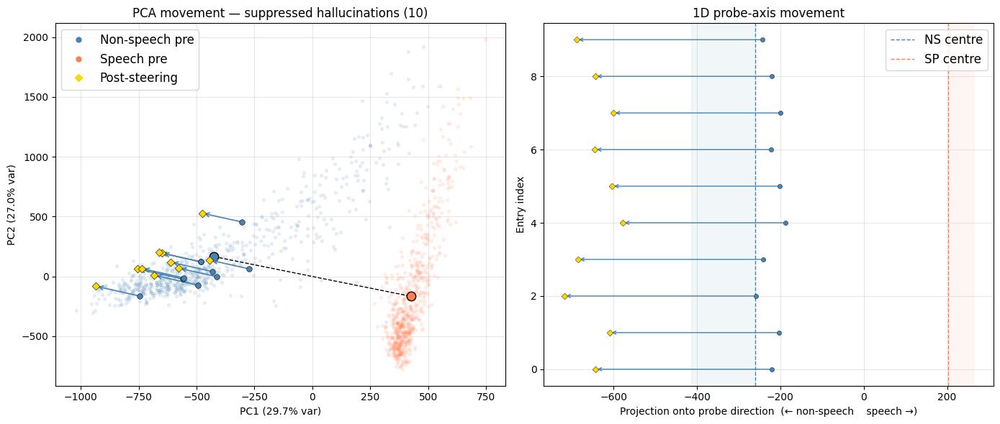

AED Hallucinations — Causal Intervention
In the previous article, we established that the encoder of our AED model builds a near-perfect linear representation of the speech/non-speech distinction — from the very first transformer layer, with essentially zero ambiguity. The model unambiguously “knows” it is looking at non-speech audio. This strongly suggests Case A: the latent representation exists, and the hallucination is a failure of the decoder to read it, not a failure of the encoder to build it.
But probe accuracy alone does not establish this. A logistic regression finding a separating hyperplane tells you the representation correlates with the input class. It says nothing about causality. The decoder might be routing around that subspace entirely — building its output from entirely different directions in activation space — in which case the probe direction is an artefact of the input statistics, not a signal the decoder ever attends to. To distinguish these, we need to intervene.
Method
The intervention
Activation patching — or steering — is the standard tool for testing causal relevance. The idea is simple: take an example from one class, modify its activations at a specific layer to push them towards the other class, and check whether the decoded output changes. If it does, the modified direction is causally upstream of the decoder. If the output is unchanged regardless of how hard we push, the decoder is ignoring that subspace.
Concretely, we take a non-speech example and add a scaled version of the probe direction \(\hat{\mathbf{w}}\) to the residual stream at the best probe layer (layer 2) during the encoder forward pass:
\[\mathbf{a}' = \mathbf{a} + \alpha \cdot (\mu_\text{sp} - \mu_\text{ns}) \cdot \hat{\mathbf{w}}\]
where \(\mu_\text{sp} = \boldsymbol{\mu}_\text{sp} \cdot \hat{\mathbf{w}}\) and \(\mu_\text{ns} = \boldsymbol{\mu}_\text{ns} \cdot \hat{\mathbf{w}}\) are the scalar projections of the class centres onto the probe direction, and \(\alpha\) is a signed scaling factor. Setting \(\alpha < 0\) pushes the non-speech activation towards the non-speech end of the direction; \(\alpha > 0\) pushes it towards speech. We are interested in whether pushing a non-speech example further into the non-speech region reduces hallucinated output — i.e. whether the decoder, confronted with a more emphatic non-speech signal, produces less text.
Adaptive alpha
A fixed \(\alpha\) applied uniformly is wasteful: examples already deep in the non-speech cluster need little pushing, while outliers near the ambiguous zone may need more. We therefore derive \(\alpha\) adaptively using a two-pass approach.
Pass 1 (clean forward pass): capture the activation at layer 2 and project it onto \(\hat{\mathbf{w}}\). Compute the normalised position along the non-speech → speech axis:
\[t = \text{clip}\left(\frac{\mathbf{a} \cdot \hat{\mathbf{w}} - \mu_\text{ns}}{\mu_\text{sp} - \mu_\text{ns}},\ 0,\ 1\right)\]
\(t = 0\) means the activation sits at the non-speech centre; \(t = 1\) at the speech centre. We then set:
\[\alpha = -0.5 \cdot (1 - t)\]
Maximum steering (\(\alpha = -0.5\)) is applied to examples deep in the non-speech cluster; steering tapers to zero as \(t \to 1\). The rationale for parametrising the steering is that we do not want to disturb the ASR task when the model is confident the segment is speech-like; we only want to ensure that, if steering has the effect of suppressing hallucinations, steering is preferentially applied to suppress output on ambiguous and hallucinated non-speech segments.
Pass 2: apply the computed \(\alpha\), decode with beam search, and compare word count and transcript against the baseline.
What we are looking for
Three outcomes are possible:
Output changes — the decoder produces fewer tokens, different tokens, or silence when the non-speech activation is pushed further into the non-speech region. This is the key evidence for Case A: the probe direction is causally upstream of the decoder.
Output unchanged at all \(\alpha\) — the decoder routes around the probed subspace. The representation exists (the probe works) but the decoder ignores it. The hallucination is a decoder-level failure.
Output degrades at large \(|\alpha|\) but doesn’t improve — the perturbation is large enough to corrupt the encoder representation, but there is no clean causal path from the probe direction to reduced output. This would suggest the direction is adjacent to something real, but not quite aligned with what the decoder actually uses.
Each outcome has different implications for what a principled fix would look like — and all three are more informative than the probe result alone.
Results
The probe direction is fitted on 900 examples per class. The steering magnitude is tuned to \(\alpha_\text{max} = 3.2\) — i.e. \(\alpha = -3.2 \cdot (1 - t)\) — on a held-out development set. Evaluation is then run on 100 fresh, unseen examples per class.
Non-speech segments
18 out of 100 non-speech segments had their hallucinated output suppressed to silence by steering. All 18 were sitting well within the non-speech cluster (\(t \leq 0.16\)), attracting strong steering (\(|\alpha| \geq 2.7\)).
| # | \(t\) | \(\alpha\) | Baseline | Steered |
|---|---|---|---|---|
| 0 | 0.08 | −2.95 | I’m on the wrong side. | (silence) |
| 27 | 0.09 | −2.92 | Oh! | (silence) |
| 32 | 0.12 | −2.80 | Oh, | (silence) |
| 42 | 0.05 | −3.03 | Come on! | (silence) |
| 47 | 0.06 | −3.00 | you. Thank. | (silence) |
| 51 | 0.01 | −3.18 | Yeah. | (silence) |
| 52 | 0.04 | −3.07 | Oh, | (silence) |
| 55 | 0.16 | −2.70 | Thank you. | (silence) |
| 57 | 0.03 | −3.11 | it. | (silence) |
| 58 | 0.05 | −3.05 | ya. | (silence) |
| 67 | 0.13 | −2.78 | I’m. | (silence) |
| 73 | 0.09 | −2.93 | ! | (silence) |
| 75 | 0.13 | −2.77 | I’m. | (silence) |
| 76 | 0.09 | −2.93 | Oh. | (silence) |
| 82 | 0.10 | −2.89 | Oh, | (silence) |
| 83 | 0.04 | −3.08 | Yeah. | (silence) |
| 85 | 0.07 | −2.98 | It. | (silence) |
| 94 | 0.02 | −3.12 | Thank you. | (silence) |
The hallucinations are characteristic of the failure mode: short, confident-sounding fragments — affirmations, interjections, fragments of social speech — produced from ambient noise. The table shows only segments where the transcript changed; steering suppressed approximately 50% of hallucinations in the full non-speech test set. In some cases where full suppression did not occur, the hallucination was abbreviated rather than eliminated — e.g. I’m → I, stopping → stop — suggesting the steering is moving the activation in the right direction without fully crossing whatever threshold triggers silence. Critically, steering did not induce more extensive hallucination in any test sample. A more carefully calibrated steering mechanism would likely improve the suppression rate further, but the objective here is solely to demonstrate that the mechanism works — that the probe direction is causally connected to the decoder output.

Speech segments
Only 1 out of 100 speech segments was affected, and the change was minor:
| # | \(t\) | \(\alpha\) | Baseline | Steered | Ref |
|---|---|---|---|---|---|
| 64 | 0.97 | −0.10 | difficult and painful. And we think we definitely need | difficult and painful. We think we definitely need | difficult and painful and we think we definitely need |
At \(t = 0.97\), this example sits almost entirely within the speech cluster and receives minimal steering (\(\alpha = -0.10\)). More extensive evaluation across larger samples suggests that, for speech segments, steering tends to produce fewer output words — but predominantly in cases where the model is already uncertain and often where it was already making a mistake. No rigorous WER evaluation was carried out at this stage, but superficially the pattern looks similar to the hallucination behaviour itself: steering seems to make the model guess less when only partial or uncertain audio information is available, rather than suppressing confident, well-supported transcription.
Sign flip: inducing hallucinations
Having established that steering in the non-speech direction suppresses hallucinations, we can run the reverse experiment as a control: flip the sign of \(\alpha\), pushing non-speech activations towards the speech end of the direction. If the direction genuinely encodes speech-likeness, this should make the model hallucinate more, and more confidently.
Non-speech segments — sign-flipped steering (α > 0):
| # | \(t\) | \(\alpha\) | Baseline | Steered |
|---|---|---|---|---|
| 1 | 0.11 | +2.84 | (silence) | Andre, andre, andre, andre, |
| 6 | 0.05 | +3.04 | (silence) | I’m. |
| 12 | 0.00 | +3.19 | (silence) | I’m, I’m, I’m, I’m, I’m, … [×100+] |
| 24 | 0.06 | +3.02 | (silence) | Oh, I’m at the end, … [×13] |
| 36 | 0.08 | +2.94 | (silence) | I’m gonna show them. |
| 42 | 0.05 | +3.03 | Come on! | I’m out! Come on! |
| 55 | 0.16 | +2.70 | Thank you. | Really, |
| 83 | 0.04 | +3.08 | Yeah. | that. I’m like, I’m like, … [×19] |
| 98 | 0.16 | +2.70 | Oh, | I’m trying to learn that. |
Segments that produced no output at baseline now hallucinate; segments that already hallucinated produce more extensive output. The repetitive, looping structure — “I’m at the end, I’m at the end, …” — is characteristic of the model entering an unstable decoding trajectory, which is itself a known hallucination pattern. The model at \(t = 0.00\) (index 12), pushed maximally toward speech, produces over a hundred repetitions of “I’m”.
Speech segments — sign-flipped steering (α > 0):
| # | \(t\) | \(\alpha\) | Baseline | Steered | Ref |
|---|---|---|---|---|---|
| 34 | 0.99 | +0.04 | library works. All right. So I’m now going to say, okay. And pretty happy with that. And guess what? I | library works. All right. So I’m now going to say, okay. And pretty happy with that. And guess what? I want | library works. All right. So I’m now going to say. And pretty happy with that. And guess what I, |
| 64 | 0.97 | +0.10 | difficult and painful. And we think we definitely need | difficult and painful. We think we definitely need | difficult and painful and we think we definitely need |
Speech segments at high \(t\) receive minimal positive steering and are largely unaffected — the changes are within the noise of normal beam search variation.
Interpretation
The results confirm Case A: the probe direction is causally upstream of the decoder. Steering non-speech activations further into the non-speech region suppresses hallucinated output, while leaving speech transcription essentially untouched.
Of the 100 non-speech test segments, approximately 35 had hallucinated output at baseline — the rest were already silent. The meaningful denominator is therefore 35, not 100: of the segments that were actually liable to be corrected, 18 were suppressed, giving a suppression rate of roughly 50%. All 18 had their hallucination fully eliminated rather than merely reduced (though partial reduction was observed in additional segments not captured by the word-count filter). A more carefully calibrated steering mechanism would likely push this further; the objective here is solely to demonstrate the mechanism, not to optimise it.
The one affected speech segment received near-zero steering (\(|\alpha| = 0.10\)) and the output change was cosmetic. This is the adaptive scheme working as intended: the steering magnitude scales with how far the example sits from the speech cluster, and at \(t = 0.97\) there is almost nothing to apply.
Taken together: the encoder builds a robust, linearly decodable representation of speech-likeness from the earliest layers; the decoder is sensitive to it; and a simple, targeted intervention along the probe direction suppresses hallucinations on non-speech audio without measurably degrading transcription of real speech. The open question is how this translates from a post-hoc analytical intervention to a practical deployment strategy — that is for future work.